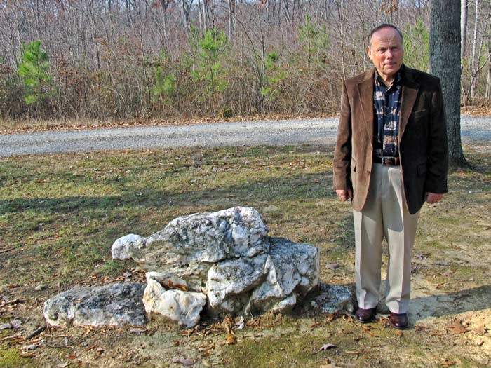

"The Upping Stone" by Tevis Smith
I remember hearing men talk for years about moving a rock from Morrow Mountain State Park to the Stony Hill Church site. I was 16 years old, a student and a farm boy when the men of our church received permission from park officials to take the rock from the meeting house site to the church site.
The year was 1953, and I was to pull the trailer with my Dad's Oliver 70 tractor. Mr. Bon Cranford led the way on moving the rock. He supervised and devised means to pry and slide the rock to the trailer parked on the Lowder's Ferry Road. Mr. Bon had the rock and the two supporting rocks on the trailer before I could get involved in the prying and sliding the rock.
I remember the landscape as being on a hill, a lot of flint rock in the area and a young pine forest. The site was on the right side of the road traveling to the ferry, and buildings nor foundations were visible. Mr. Bon, using the same methods as loading the rocks, removed the rocks from the trailer to the Stony Hill Church site and placed it as it was at the meeting house site. I do not remember all the men involved in moving the rock, but I do know that the job was done very professionally. ( see also Bonnie Mullinix Springer )
